阅读约定：正文先描述仓库当前已经实现的架构，再单独讨论风险与目标设计。当前实现、推断、风险/技术债和目标设计互不混写；所有架构图均为仓库内离线 SVG 资源。
#1. 文档目的与阅读约定
本文归纳当前项目真实采用的技术架构，并在此基础上提出目标技术架构。它不是通用架构教程，也不把尚未实现的能力包装成当前能力。
文中使用四种陈述：
| 类型 | 含义 |
|---|---|
| 当前实现 | 可以由代码、配置、SQL、测试或项目规范直接证明 |
| 推断 | 从多个事实推导出的设计解释，不等同于原作者明确决策 |
| 风险/技术债 | 当前约束可能导致的维护、恢复或演进问题 |
| 目标设计 | 推荐的 To-Be 技术架构，不代表已经实现 |
架构图采用 C4 的分层思想，并统一使用中文 SVG 信息图表达。系统上下文、进程、模块、数据、部署和 To-Be 架构通过直接命名的组件节点与关系连线呈现；工作流与状态章节使用适合分支和状态转换的布局。图片可随阅读区域响应式缩放，复杂图在窄屏中允许横向查看。As-Is 与 To-Be 分图呈现。
#2. 项目目标与系统边界
#2.1 项目目标
Data Agent 当前围绕 MySQL DDL 构建可恢复的元数据生成流程：
- 接收一个逻辑数据源和 MySQL DDL。
- 使用 SQLGlot 确定性解析表、列、类型、主外键等物理结构。
- 加载与当前物理模式兼容的长期记忆。
- 通过 OpenAI 兼容模型生成结构化语义元数据。
- 对语义角色、引用、置信度和指标表达式进行确定性校验。
- 当指标业务含义不足时中断工作流，等待用户回答。
- 恢复后生成指标，并在一个 MySQL 事务中持久化元数据快照和被接受的长期记忆。
#2.2 当前参与者
- 本机浏览器或 API 调用方：提交 DDL、查询任务、回答问题、管理记忆。
- 项目维护者：运行 API、worker 和本地基础设施，查看日志与测试结果。
- OpenAI 兼容 LLM 服务：提供符合 Pydantic 结构化契约的语义和指标生成。
#2.3 当前系统边界
项目当前负责：
- DDL 物理模式解析；
- 语义元数据及指标生成与验证；
- 异步任务状态、人工中断与恢复；
- 元数据快照和长期记忆持久化；
- 本机 API、worker 以及相关基础设施生命周期。
项目当前不负责：
- 执行用户提交的业务 SQL；
- 通用数据库迁移；
- 公网身份认证与多租户；
- 前端页面实现；
- 把 Elasticsearch、Qdrant 或 TEI 的派生数据当作权威事实。
最后一项需要特别注意：这三个服务已经参与当前记忆检索与索引同步链路，但索引只贡献候选 UID；返回内容必须回查 MySQL 并通过来源、类型、版本和内容哈希校验。
#3. 技术栈总览
| 层次 | 当前技术 | 主要职责 |
|---|---|---|
| HTTP | FastAPI、Pydantic | 本机 API、输入输出契约、生命周期组合 |
| 异步任务 | arq | Redis 队列激活、重试、周期任务与记忆索引 outbox 同步 |
| 工作流 | LangGraph | 节点编排、条件分支、interrupt/resume、检查点 |
| DDL 解析 | SQLGlot | MySQL DDL AST 解析与规范化 |
| LLM | LangChain ChatOpenAI | OpenAI 兼容结构化模型调用 |
| 任务控制面 | Redis、Lua | 公开任务投影、修订、租约、dispatch/cleanup outbox 与检查点 |
| 权威数据 | MySQL 8.4、SQLAlchemy Core | Meta 快照、类型化长期记忆、事件、关联与索引 outbox 的原子事务 |
| 派生检索 | Elasticsearch、Qdrant、TEI | BM25、向量召回与嵌入；API 和 Worker 当前均初始化并参与记忆检索/同步 |
| 检查点 | LangGraph Redis Saver | 工作流线程状态和人工恢复 |
| 日志 | Loguru | 控制台文本、滚动 JSON 文件、统一事件字段与 trace_id 上下文 |
| 测试 | pytest、pytest-asyncio | 单元、基础设施/持久化集成、混合记忆与跨边界流程测试 |
| 工程质量 | Ruff、Pyright、uv | 规范、类型、依赖锁与构建 |
#4. As-Is 系统上下文
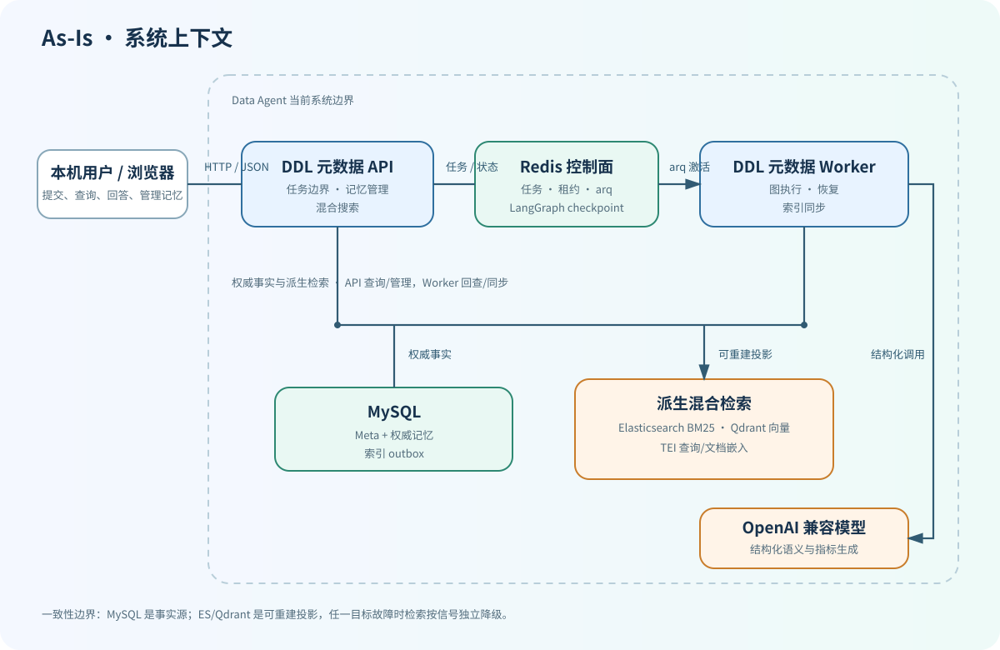
MySQL 保存可审计的权威记忆；Elasticsearch 与 Qdrant 保存可重建的派生投影，TEI 负责生成查询和文档向量。FastAPI 通过混合检索服务响应记忆查询，Worker 通过同一套检索能力加载工作流上下文，并周期性消费 MySQL 索引 outbox 同步两个派生目标。
#5. As-Is 进程与基础设施架构
#5.1 运行进程
当前应用仍保持两个 Python 进程边界，但两个进程都已接入类型化权威记忆链路：
- FastAPI 进程：初始化 Redis、MySQL、Elasticsearch、Qdrant 与 TEI，组合
DDLJobStore、MemoryService与路由；负责权威记忆详情/历史/修正/删除以及混合检索。 - arq worker 进程：初始化上述资源以及 LLM、LangGraph 检查点和工作流依赖；执行/恢复 DDL 图，并周期性消费任务 outbox、清理 checkpoint、同步 ES/Qdrant 记忆投影。
#5.2 容器与服务关系
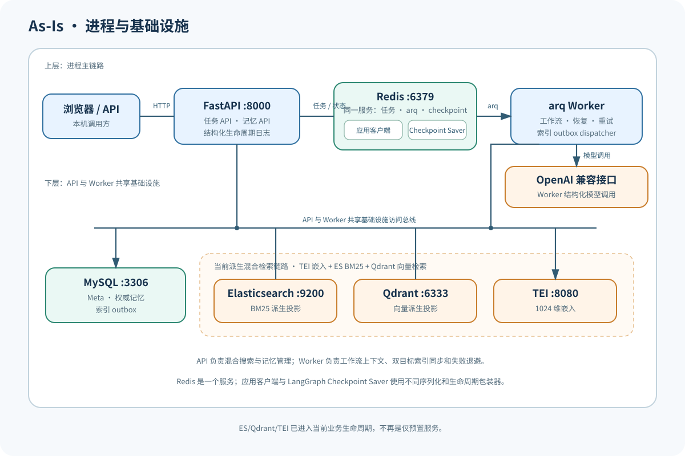
MySQL 是长期记忆和索引期望状态的事实源。Elasticsearch、Qdrant 或 TEI 单点故障不会改变权威事实：检索按目标独立降级，Worker 的索引初始化失败会记录结构化 deferred 事件并由后续同步/重建恢复。Redis 应用客户端与 LangGraph checkpoint saver 仍使用独立包装器，因为序列化和生命周期契约不同。
#6. As-Is 代码模块与依赖方向
#6.1 目录职责
| 模块 | 职责 |
|---|---|
application.py | FastAPI 工厂、异常处理以及 Redis/MySQL/ES/Qdrant/TEI 生命周期组合 |
settings.py | 日志、任务、模型、记忆、检索与基础设施配置校验 |
logging.py | Loguru sink、JSON 安全投影、统一上下文字段与事件格式 |
infrastructure/ | MySQL、Redis、checkpoint、LLM、TEI、ES、Qdrant 生命周期适配 |
ddl_metadata/api.py | DDL 任务与记忆搜索、详情、历史、修正、软删除 HTTP 边界 |
ddl_metadata/models/ | API、图状态、任务投影、类型化记忆、事件、搜索与索引 outbox 契约 |
ddl_metadata/parsing.py | 确定性 DDL 解析 |
ddl_metadata/validation.py | 语义、问题、指标的确定性校验 |
ddl_metadata/workflow/ | LangGraph 编排、记忆上下文加载及 LLM 元数据生成边界 |
ddl_metadata/jobs/ | Redis 任务状态机、来源租约、dispatch 与 cleanup |
memory/context.py | 把经过 MySQL 回查的混合检索结果压缩为工作流记忆 capsule |
memory/search.py | MySQL exact、ES BM25、Qdrant 向量信号的超时、降级、RRF 与权威回查 |
memory/indexes.py | ES/Qdrant 索引初始化、投影 upsert/delete 与向量维度契约 |
memory/outbox.py | 按目标领取、同步、确认或退避重试可重建索引投影 |
memory/service.py | 权威记忆查询、历史、修正、软删除、混合搜索与来源租约协调 |
memory/snapshots.py | Meta 快照、权威记忆和双目标索引 outbox 的同事务提交 |
ddl_metadata/persistence/ | SQLAlchemy Core 表、权威记忆/事件/关联/outbox 仓储与 Session 边界 |
ddl_metadata/worker.py | arq 激活、恢复、重试、状态投影、周期清理与记忆索引同步 |
#6.2 依赖方向
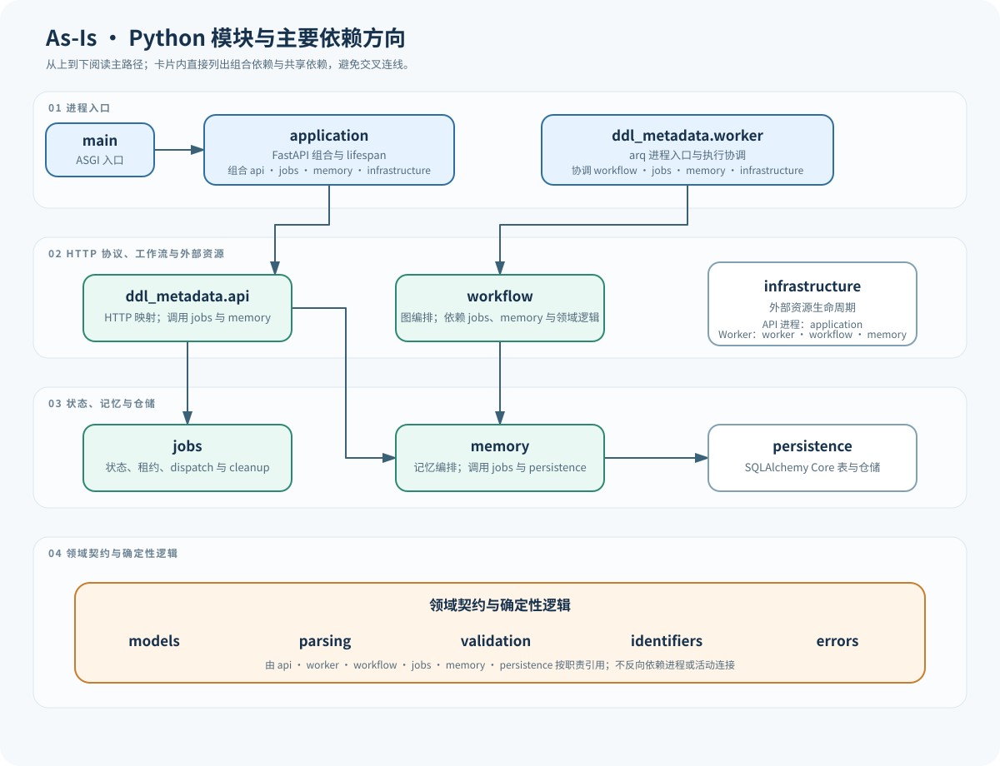
依赖约束：
- 领域契约不能反向依赖 FastAPI、arq 或活动连接。
- MySQL 权威内容是派生索引的来源；ES/Qdrant 投影不能反向成为事实源。
- 持久化仓储不负责 commit、close 或外部资源生命周期。
当前按业务功能聚合 DDL 元数据代码，并把外部资源生命周期放在 infrastructure/。需要关注的是 worker.py、DDLJobStore 和记忆同步协调仍承担较多职责，To-Be 将通过端口与应用服务收敛这些边界，而不是立即拆微服务。
#7. HTTP API 与异步任务主流程
#7.1 API 面
当前路由包括：
| 方法与路径 | 作用 |
|---|---|
POST /api/v1/metadata/ddl-jobs | 持久受理 DDL 任务，返回 202 |
GET /api/v1/metadata/ddl-jobs/{job_id} | 查询安全公开任务投影 |
POST /api/v1/metadata/ddl-jobs/{job_id}/answers | 提交当前问题集答案并恢复任务 |
GET /api/v1/metadata/memories/search | 按 source、query 和 kind 执行 ES + Qdrant 混合检索并回查 MySQL |
GET /api/v1/metadata/memories/{memory_uid} | 查询 MySQL 权威记忆详情 |
GET /api/v1/metadata/memories/{memory_uid}/history | 查询 ADD、UPDATE、DELETE 历史 |
PATCH /api/v1/metadata/memories/{memory_uid} | 记录同 kind/scope 的用户确认修正，要求重新处理 DDL |
DELETE /api/v1/metadata/memories/{memory_uid} | 可审计软删除并生成双索引 DELETE outbox |
#7.2 提交到终态
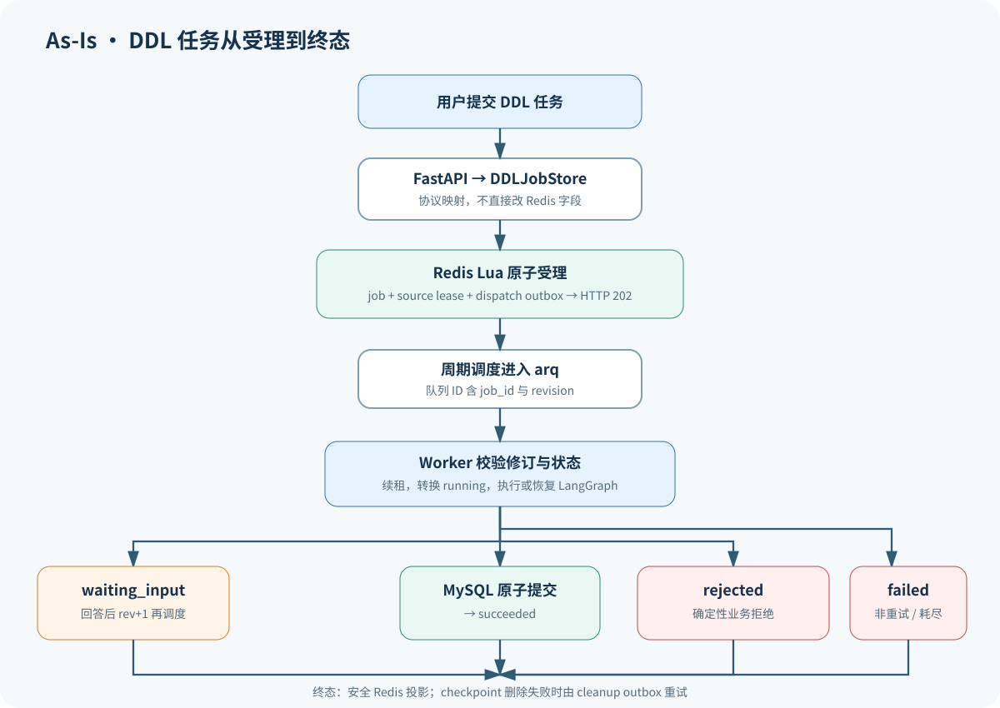
202 的语义不是“只收到请求”，而是 Redis 任务记录、来源租约和 dispatch outbox 已持久建立。API 路由不直接修改 Redis 字段，而是委托给 DDLJobStore 保持状态、修订、租约和 outbox 的原子契约。
#8. LangGraph DDL 元数据工作流
#8.1 图状态
DDLGraphState 只保存可检查点序列化值，包含：
- 任务身份、来源、方言和原始 DDL；
- 物理模式和语义元数据；
- 记忆 capsule、复用记忆和复用指标；
- 指标问题、回答和当前问题集；
- 指标、记忆候选与校验错误；
- 修复次数、问题轮次、路由、结果和错误。
模型、记忆加载器和快照写入器通过 DDLGraphDependencies 作为进程内依赖注入，不进入检查点。
#8.2 工作流节点
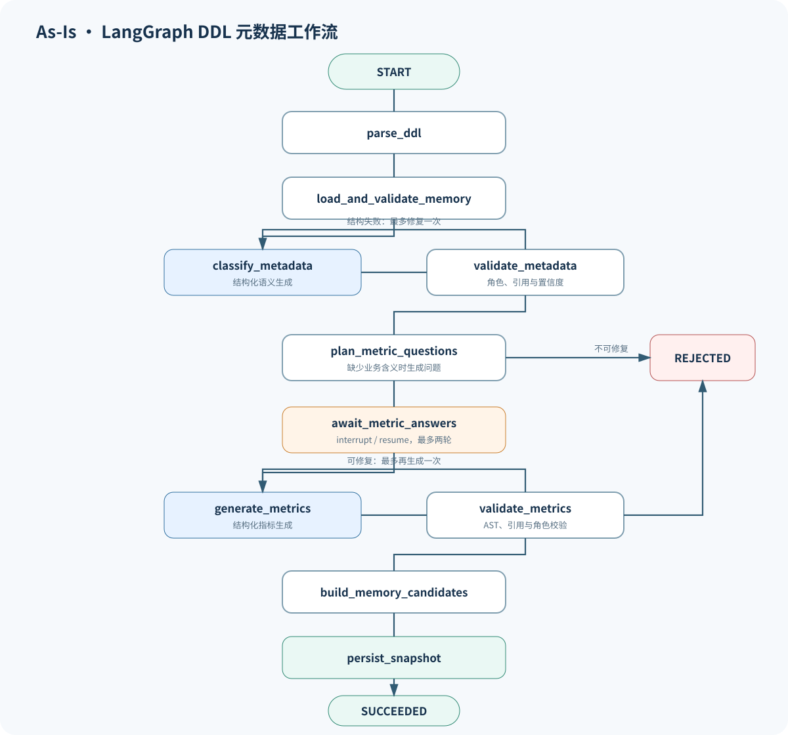
生成、规划或校验节点出现不可修复业务错误时，统一进入 REJECTED 节点。
#8.3 确定性与非确定性边界
- SQLGlot 负责物理名称、类型、注释、键和稳定 ID，避免让模型重新发明物理结构。
- LLM 只生成语义角色、描述、别名、问题和指标等语义信息。
- 每次模型输出先通过 Pydantic，再通过 AST、引用、角色和置信度校验。
- 语义生成和指标生成各有独立计数器；每类可修复输出最多再调用模型一次，即首次调用加一次图内修复。
- 指标澄清最多两轮：首轮回答后仍缺业务含义时再规划一轮，第二轮后仍不完整则以
metric_ambiguity拒绝。 - 有事实表且没有可复用的有效指标时，
plan_metric_questions必须产生有效问题并进入人工中断；模型不能猜测缺失的业务含义。 - 只有验证完成后才允许写入 MySQL。
#9. 人工介入、恢复与修订
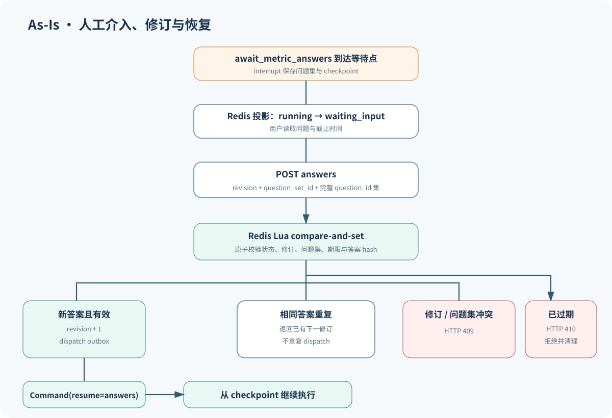
公开状态转换如下；succeeded、rejected 和 failed 都是终态：
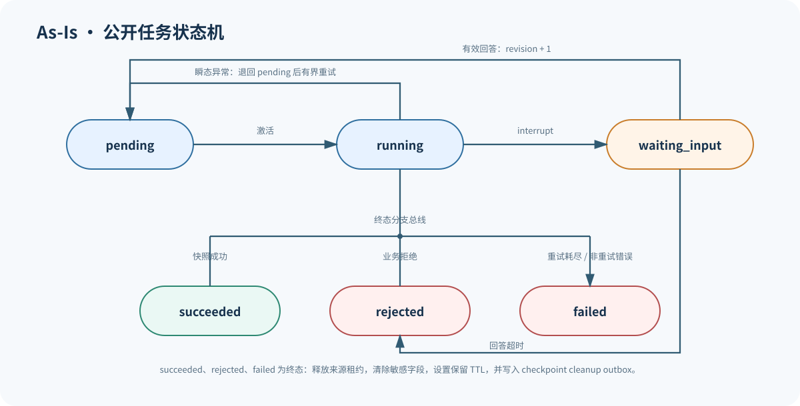
恢复由两个状态面协作完成：
- Redis 公开投影告诉 API 和用户任务当前处于什么状态；
- LangGraph 检查点告诉 worker 从哪个节点和状态继续。
worker 会在激活时协调两者。例如 checkpoint 已中断但 Redis 仍显示 running 时，worker 会把公开投影修复为 waiting_input。
#10. 数据与状态职责
#10.1 数据职责图
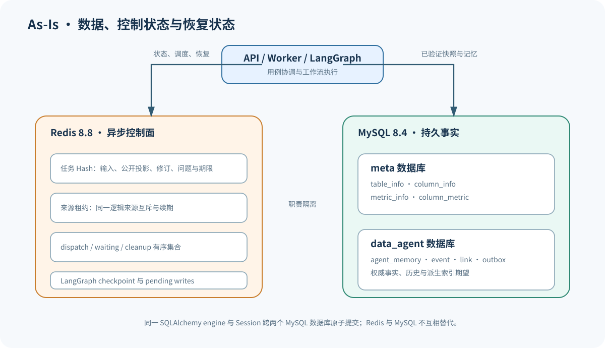
Redis 与 Worker 之间的双向连接分别表示 arq 激活和状态/checkpoint 回写；API 与 MySQL 的连接表示记忆查询与修正，Worker 与 MySQL 的连接表示已验证快照原子提交。
Redis 与 MySQL 职责独立；只有 Worker 发起元数据快照与长期记忆的原子提交。
#10.2 Redis
Redis 是当前异步控制面的核心，承担：
- 任务输入和安全公开投影；
- 状态、修订、尝试次数、问题和截止时间；
- 同一逻辑来源的可续期租约；
- dispatch、waiting 和 checkpoint cleanup 有序集合；
- LangGraph Redis 检查点。
任务终态转换会删除原始 DDL、回答、当前问题等敏感内部字段，只保留安全摘要，并设置结果保留 TTL。
实际应用键由 redis.key_prefix=ddl 生成：
| 键/前缀 | 类型与职责 |
|---|---|
ddl:job:{job_id} | Hash；内部执行输入与 API 公开投影的共同记录，终态时清除敏感字段 |
ddl:source:{source} | 带 TTL 的字符串租约；值为任务 ID 或短期记忆变更 token |
ddl:dispatch | ZSET dispatch outbox；成员为 {job_id}:{revision} |
ddl:waiting | ZSET；按回答截止时间调度显式过期转换 |
ddl:checkpoint_cleanup | ZSET cleanup outbox；线程删除成功后才确认 |
ddl:checkpoint*、ddl:checkpoint_write* | AsyncRedisSaver 拥有的 LangGraph checkpoint 与 pending writes |
arq 自身的队列/结果键不作为公开任务记录。队列 job ID 固定为 ddl:{job_id}:{revision}，重复 dispatch 可由同一 ID 去重；公开事实仍以任务 Hash 及其修订感知转换为准。
#10.3 MySQL
项目使用一个 SQLAlchemy async engine 和 Session 工厂：
- 默认
meta数据库保存元数据快照； memory.database（默认data_agent）保存权威长期记忆和类型化关系；- 两个数据库的静态表通过同一个 MySQL 连接和 Session 参与一个 InnoDB 事务。
真实表边界为：
| 数据库 | 表 | 当前职责 |
|---|---|---|
meta | table_info、column_info、metric_info、column_metric | 已接受的表、列、指标及列—指标快照 |
data_agent | agent_memory、agent_memory_event、agent_memory_link、memory_index_outbox | 类型化权威事实、只追加历史、稳定对象关联及 ES/Qdrant 期望状态 |
MetadataSnapshotService.persist() 是已接受快照的跨仓储提交边界：同一个 MySQLDatabase.session() 原子提交 Meta、权威记忆、历史、关联和双目标 outbox。Elasticsearch BM25 与 Qdrant/TEI 向量数据是 worker 最终一致同步的可重建投影；失败只保留积压，不把已经提交的 DDL 任务改成失败。用户 PATCH 只记录待重新处理的确认事件，不直接改写 Meta。
当前没有迁移框架。Meta 库的初始化脚本会在空卷首次启动时重建四张 Meta 表，应用记忆库的初始化脚本会创建四张 InnoDB 记忆表。SQLAlchemy Core 定义和 bootstrap SQL 的同步依赖集成测试与维护纪律，metadata.create_all() 只用于测试，不是生产迁移机制。
#10.4 快照与长期记忆
当前设计区分：
- Meta 快照：当前被接受的表、列、指标及其关系；
- 权威记忆：可复用的语义、问题、回答、指标等内容及关系；
- 派生 payload：可以从权威内容重建，不是信任来源；
- 修正：PATCH 先追加用户确认的 UPDATE 事件并要求重新处理 DDL；后续工作流接受修正后才创建替代记忆、建立
SUPERSEDES关系并软删除旧记录，而不是直接篡改现有快照。
稳定 SHA-256 ID、关系唯一键、MySQL upsert 和范围化清理使快照持久化可以在崩溃恢复后安全重放。
#11. 可靠性与质量属性
#11.1 幂等与并发控制
| 机制 | 解决的问题 |
|---|---|
| 任务修订号 | 防止拿到旧修订任务消息的 worker 执行，以及旧回答覆盖新状态 |
| Lua compare-and-set | 原子检查状态、修订、问题集和期限 |
| 逻辑来源租约 | 串行化同一来源的 DDL 任务和记忆修改 |
| 稳定内容 ID | 使元数据和记忆写入可安全重放 |
| 唯一关系键 | 避免重试产生重复记忆关系 |
| dispatch outbox | 避免任务记录已受理但队列激活丢失 |
| cleanup outbox | 避免终态检查点删除失败后永久泄漏 |
这里的“旧修订任务消息”不是旧版本的 worker 程序。dispatcher 负责把 outbox 中的任务激活请求送入 arq 队列，多个 worker 进程负责消费；队列延迟、重试或积压时，某个 worker 可能拿到修订号已经落后的消息。例如 Redis 中任务已经是 revision=1，worker 拿到的仍是 job_id:0。worker 会先比较消息修订号与 Redis 当前修订号，发现不一致便结束本次执行，不修改任务状态。
同一来源租约跨越 waiting_input 阶段，并在任务激活或回答时续期。记忆管理操作也短暂获取同一租约，避免用户修正与运行中的图读取/写入发生不受控竞争。
#11.2 重试与修复次数
项目有三层不同含义的“重试”，不能混为一谈：
| 层次 | 当前上限 | 行为 |
|---|---|---|
ChatOpenAI 客户端 | llm.max_retries=2 | 传给模型客户端的传输重试配置 |
| LangGraph 结构化结果修复 | 语义一次、指标一次 | 每类首次模型输出失败后最多再调用一次；指标人工澄清最多两轮 |
| arq job 激活 | max_tries=3 | 每次 pending -> running 增加 attempt；瞬态异常且 attempt < 3 时退回 pending |
worker 只对明确的瞬态异常执行 job 级重试：
- OpenAI 连接、超时、限流和服务端错误；
- SQLAlchemy
OperationalError； - Redis 连接和超时；
- 普通连接与超时错误。
进入图执行后的瞬态异常会先把 running 原子转回 pending，再由 arq 使用 2 ** attempt + [0,1) 秒的退避重新激活。读取任务、续租或故障处理时 Redis 暂不可用会使用固定 2 秒 defer，但同样受 arq 的 max_tries=3 限制。业务校验失败不是基础设施故障，进入 rejected；身份认证、配置错误或未知异常进入 failed，不会按瞬态集合重试。
#11.3 检查点恢复
LangGraph 使用 job_id 作为 thread_id 并采用同步 durability。已经完成并成功写入 checkpoint 的模型节点不会因后续持久化失败而重复调用。若 persist_snapshot 失败，重试可以从检查点继续持久化。
终态任务通过 cleanup outbox 请求删除 checkpoint。只有 adelete_thread() 成功后才从 outbox 确认，Redis 短暂故障或 worker 重启不会让清理请求静默丢失。
#11.4 数据一致性
- 图等待输入或校验未完成时不写 Meta 或可信记忆。
- Meta 快照和长期记忆在同一 MySQL 事务中提交。
- SQL 失败时 Session 回滚并保留原始异常供 worker 分类。
- 更新只清理当前提交范围内的表、列和指标，不删除未包含在本次 DDL 中的其他表。
#11.5 可恢复性边界
当前恢复能力依赖 Redis 持久性。Compose 使用 AOF 和 appendfsync everysec，提高了本地重启后的恢复概率，但不是零数据丢失承诺；主机突发故障仍可能丢失最近约一秒写入。
#12. 错误处理与安全投影
#12.1 错误分类
| 类别 | 当前处理 |
|---|---|
| 请求模型校验 | FastAPI 标准 422 |
| 稳定业务拒绝 | DDLMetadataError 映射安全 HTTP/任务错误 |
| 未找到 | 404 |
| 修订、租约或状态冲突 | 409 |
| 回答过期 | 410 并进入拒绝/清理 |
| Redis API 边界故障 | 503，不能声称已受理 |
| worker 瞬态基础设施故障 | 有界重试 |
| 非重试或耗尽重试 | failed，只投影安全错误 |
| 模型/业务确定性校验失败 | rejected，不写数据库 |
#12.2 安全错误信封
API 对业务错误返回：
{
"error": {
"code": "stable_error_code",
"stage": "workflow_stage",
"retryable": false,
"details": {}
}
}跨 HTTP 或任务边界只允许稳定错误码、阶段、是否可重试和有界安全详情。原始 DDL、回答、模型输出、提示、凭证、完整服务 URL、异常 repr 和堆栈不得进入公开投影。
未知 worker 异常只向公开任务投影暴露异常类型。当前 catch 分支会把任务安全地转为 failed，但没有显式调用 logger.exception()；因此不能保证完整 traceback 被保留，这是可观测性改进项。LLM API key 只从 DATA_AGENT_LLM_API_KEY 读取，不进入 YAML、Redis、checkpoint、日志或响应。
#13. 配置、日志与部署
#13.1 配置
AppSettings 从 conf/app_config.yaml 读取非秘密配置，并使用 Pydantic 禁止未知字段。当前仓库基线值如下：
| 分组 | 当前值 | 运行含义 |
|---|---|---|
api | 127.0.0.1:8000；CORS 为本机 :3000；DDL 262144 bytes；最多 50 表/500 列 | HTTP 仅允许回环 host；DDL 上限在 Store/Parser 边界执行 |
redis | redis://localhost:6379/0；prefix ddl；result/checkpoint retention 均 86400 秒；waiting 1800 秒；worker concurrency 4；job timeout 600 秒 | checkpoint_retention_seconds 当前未被运行路径消费，终态 checkpoint 由 cleanup outbox 尽快删除 |
llm | http://127.0.0.1:11434/v1；local-model；timeout 60 秒；confidence 0.75；json_schema；并发 4；client retries 2；prompt/graph v1 | API key 只来自 DATA_AGENT_LLM_API_KEY；worker startup 执行 live 结构化能力探针 |
mysql / memory | Meta DSN 默认库 meta；memory 库 data_agent；content/projection v1；来源租约 3600 秒；rebuild/outbox batch 100；RRF 60 | Meta、权威记忆和 outbox 使用同一 engine/事务；长期作用域是 source，job_id 仅作 provenance |
| 派生检索 | Qdrant :6333 / 1024 维 Cosine；Elasticsearch :9200 / IK；TEI :8080 | API 与 worker 初始化客户端；worker 独立同步两个目标，检索故障安全降级 |
logging | console/file 均 INFO；文件目录 logs；rotation 10 MB；retention 7 days | 文件名由实现固定为 data-agent.log |
默认 API 绑定 127.0.0.1，CORS 仅允许本机浏览器来源。当前无认证，因此不应直接改为公网监听。
#13.2 日志
FastAPI lifespan 和 worker startup 各自调用统一 setup_logging()。当前图节点日志及 checkpoint 清理警告以公开 job_id 绑定 trace_id；持久化仓储本身目前没有发出任务日志，不能声称已经形成完整的跨层 tracing。
项目日志规范允许的安全字段包括节点、状态、修订、尝试、轮次、耗时、对象数量、稳定错误码和异常类型；当前实现只使用了其中一部分。禁止记录原始 DDL、答案、提示、完整模型响应、密码、API key、token 和完整连接 URL。
#13.3 本地部署拓扑
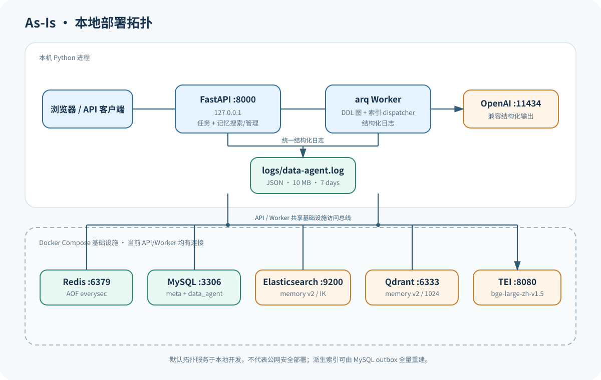
Compose 对 Redis 使用回环端口限制；MySQL、Qdrant、Elasticsearch 和 TEI 端口目前对宿主机所有接口开放，适用于本地开发环境，不代表生产安全拓扑。TEI 的宿主机端口是 8080，容器健康检查和服务监听端口是 80。
#14. 测试架构与当前质量边界
#14.1 测试层次
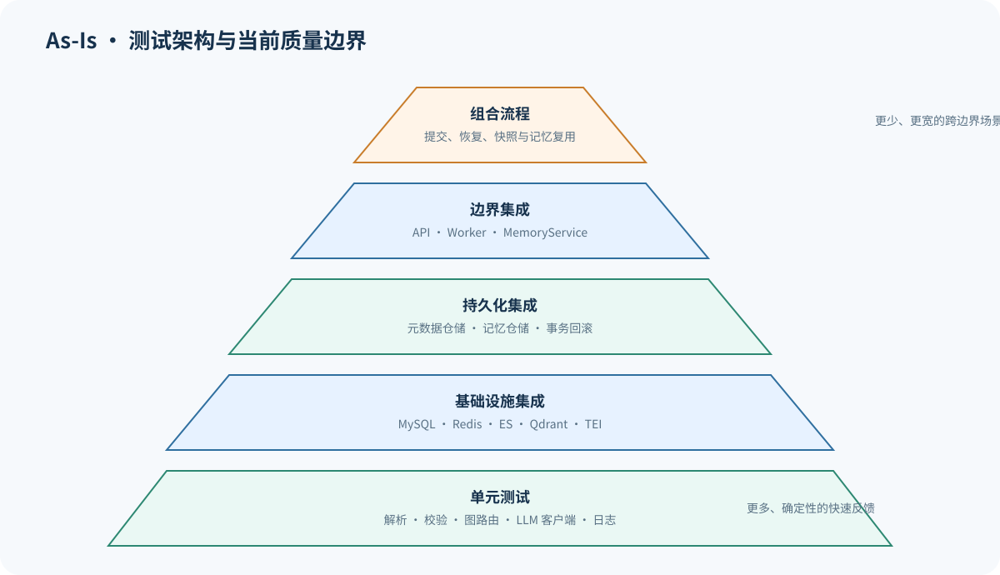
#14.2 已验证能力
- DDL 解析、输入边界、语义/指标确定性校验；
- LangGraph 路由、修复、拒绝、人工中断与恢复；
- Redis 任务状态、修订、来源租约、调度与 checkpoint 清理；
- MySQL 跨数据库事务、Meta 快照、类型化记忆、事件、关联和索引 outbox；
- 记忆 exact/BM25/向量信号、RRF、MySQL 回查、独立降级与索引同步；
- API 的任务与记忆搜索、详情、历史、修正、软删除边界；
- Worker 重试、重复激活、恢复、终态投影与周期性索引 dispatcher；
- 结构化日志默认字段、安全投影、文本/JSON sink 与上下文传播；
- TEI、Elasticsearch、Qdrant 的可选真实服务集成。
#14.3 当前边界
- 单元测试使用 fakes/mocks，不证明真实 LLM 服务支持配置的结构化输出；Worker 启动时另有 live capability probe。
- 默认快速测试不证明 ES、Qdrant 与 TEI 的实时可用性；真实服务集成由可选 integration 标记覆盖。
- 混合检索已经进入业务链路，但离线召回质量、RRF 参数和误复用率仍缺少评测基线。
- 当前没有数据库迁移框架测试，bootstrap SQL 与 SQLAlchemy 表定义的一致性依赖维护纪律和集成测试。
#15. 关键架构决策
以下“理由”分为代码可证明的约束和本文推断。推断不代表存在正式 ADR。
#15.1 API 与 worker 进程分离
决策：FastAPI 只负责本机 HTTP 边界和持久受理；arq worker 执行长耗时、可恢复工作流。
收益
- HTTP 请求不等待 LLM 与人工回答；
- worker 可独立控制并发和重试；
- API 失败不直接中断已持久受理的任务。
代价
- 引入 Redis 公开投影与检查点之间的协调；
- 需要 dispatch 和 cleanup outbox。
#15.2 Redis 作为任务控制面
决策：公开任务投影、修订、来源租约、调度与清理队列放在 Redis，通过 Lua 原子更新。
收益
- 状态转换、修订检查和 outbox 可以在一个 Redis 原子操作中完成；
- 与 arq 和 LangGraph Redis checkpoint 的运行环境一致。
代价
- Redis 成为 API 受理和恢复的关键依赖；
DDLJobStore与 Lua 状态机复杂度较高；- 强审计能力弱于关系型任务账本。
#15.3 LangGraph 承载人工中断工作流
决策：使用 LangGraph 节点、条件路由、checkpoint 和 interrupt。
收益
- 人工回答前后可以恢复；
- 已完成节点可避免无意义重复调用；
- 图节点明确表达解析、生成、校验和持久化顺序。
代价
- 需要协调 checkpoint 与公开任务状态；
- 图/提示/内容版本变化需要兼容治理。
#15.4 确定性解析和校验包围 LLM
决策：物理 DDL 由 SQLGlot 解析，LLM 只提供语义信息；结构化输出必须经 Pydantic 和确定性规则校验。
收益
- 限制模型幻觉影响范围；
- 模型结果不通过验证就不会持久化；
- 错误可以稳定归类为修复、拒绝或重试。
代价
- 需要维护较严格的模型、验证器和提示版本；
- 新语义能力必须同步修改多层契约。
#15.5 一个 MySQL 事务提交 Meta 与记忆
决策：两个数据库使用同一 MySQL engine、Session 和事务。
收益
- 元数据快照和相应可信记忆不会部分提交；
- 稳定 ID 和 upsert 支持恢复重放。
代价
- 绑定 MySQL 同实例跨数据库事务能力；
- 数据库拆分会要求新的事务/事件一致性设计。
#15.6 MySQL 权威记忆与双派生检索
决策：MySQL 保存类型化内容、事件、关联和索引期望状态；Elasticsearch 与 Qdrant 只保存可重建投影，TEI 提供向量。
收益
- 搜索性能与权威事实解耦，任一派生目标故障可独立降级；
- 索引可按
projection_version从 MySQL 全量重建； - 所有命中回查 MySQL 后才进入 API 响应或模型上下文。
代价
- 引入最终一致的双目标 outbox、退避重试与重建运维；
- 需要评测 BM25、向量与精确信号的边际价值及误复用风险。
#16. 当前风险与技术债
| 优先级 | 风险/技术债 | 影响 |
|---|---|---|
| 高 | Redis 同时承载任务、租约、任务 outbox 和 checkpoint | 故障域集中，恢复与运维理解成本高 |
| 高 | 图、提示、内容和投影版本只有基础字段，缺少完整兼容矩阵和迁移工具 | 升级时可能无法安全恢复旧任务或复用旧记忆 |
| 高 | 没有数据库迁移框架 | Core 表定义与 bootstrap SQL 可能漂移 |
| 中 | ES/Qdrant 双目标投影采用最终一致 outbox | 目标故障会形成积压；需要监控、退避、重建与版本切换演练 |
| 中 | 混合检索缺少离线质量基线 | 无法量化 BM25、向量、RRF 参数和误复用的真实收益/风险 |
| 中 | checkpoint_retention_seconds 已配置但未被主路径使用 | 配置语义与实际清理策略不一致 |
| 中 | 大型 Redis Store/Lua 与 Worker 协调边界集中多个状态职责 | 状态或调度变化需要跨脚本、模型、入口和测试同步 |
| 中 | 已有结构化日志但缺少指标、分布式追踪和恢复演练 | 仍难量化节点耗时、检索降级、重试率与 outbox 积压 |
| 中 | Redis AOF everysec 不是零丢失 | 主机故障可能丢失最近写入 |
| 条件性 | API 无认证且只设计为 loopback | 若误改为公网监听会暴露 DDL 和记忆管理能力 |
“API 无认证”在当前回环部署约束下不是立即缺陷；只有部署边界改变时才升级为高优先级安全问题。ES、Qdrant 与 TEI 已是当前记忆链路组件，不再属于“仅预置”技术选项。
#17. To-Be 推荐技术架构
#17.1 设计目标
目标架构不拆成微服务，继续保持单仓库、API/worker 两进程，以较低成本解决以下技术问题：
- 显式化应用用例与外部适配器边界；
- 分开建模公开任务投影、调度 outbox 和 workflow checkpoint；
- 降低 worker 与 Redis Store 的协调职责；
- 建立版本兼容与迁移基线；
- 为可观测性、恢复演练和当前混合记忆检索提供稳定端口。
#17.2 推荐结构
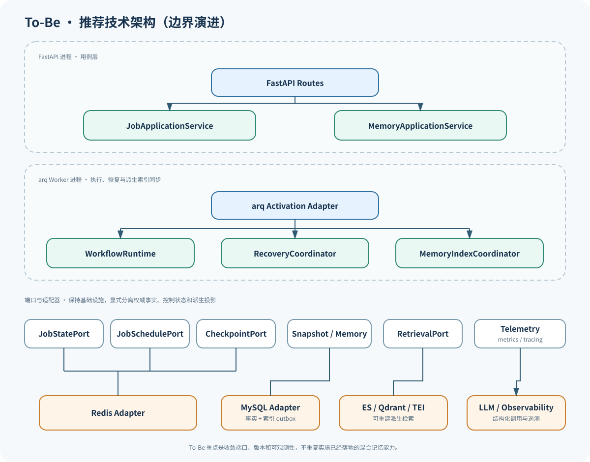
#17.3 核心边界
#JobApplicationService
负责提交、查询和回答用例，依赖 JobStatePort 与 JobSchedulePort。HTTP 路由只做协议映射，不了解 Redis 键和 Lua 字段。
#WorkflowRuntime
负责创建/调用图以及注入模型、记忆、快照和 telemetry 端口。工作流定义只表达节点、状态和路由。
#RecoveryCoordinator
负责激活校验、公开投影与 checkpoint 协调、恢复输入选择、终态投影和清理请求。把这些职责从大型 worker 入口中提取出来，但仍运行在同一 worker 进程。
#状态端口拆分
JobStatePort：公开任务投影、修订和来源租约；JobSchedulePort：dispatch/waiting/cleanup 调度意图；CheckpointPort：工作流内部恢复状态。
第一阶段可以继续由同一 Redis 实例实现，重点是契约分离，不急于拆基础设施。
#数据端口
SnapshotPort：提交已验证元数据快照；MemoryPort：读取、管理和持久化规范记忆；- 两个端口在当前 MySQL adapter 内仍可共享一个事务协调器。
#17.4 版本治理
建立版本兼容矩阵：
| 版本 | 作用 | 不兼容时的动作 |
|---|---|---|
graph_version | 节点/状态/路由兼容 | 阻止旧任务在新图上盲目恢复，提供迁移或安全失败 |
prompt_version | 模型行为与输出意图 | 记录生成来源，按需重新处理 |
content_version | 权威类型化记忆内容契约 | 迁移或隔离旧内容 |
projection_version | ES/Qdrant 派生投影契约 | 清空专用索引并从 MySQL 全量重建 |
| schema migration | MySQL 物理结构 | 通过迁移工具顺序升级与回滚 |
#17.5 当前混合检索能力
首版已启用受 source 和版本过滤约束的多信号召回：
- MySQL scope/fingerprint 或完整文本精确命中作为安全基线；
- Elasticsearch 对确定性
memory_text执行 BM25，TEI 为 Qdrant 生成 query/document embedding； - 采用固定常量的 Reciprocal Rank Fusion 合并排名，并以 UID 稳定打破并列；
- 所有 UID 批量回查 MySQL，验证 source、状态、版本、content hash 和当前对象引用后才能进入模型 capsule；
- 任一索引故障独立降级，两个索引均不可用时仅保留 MySQL 精确结果。
Elasticsearch 与 Qdrant 都不保存权威事实；两者由同一 MySQL outbox 分目标确认并可全量重建。
#17.6 关键备选方案
| 设计点 | 当前选择 | 备选 | 选择条件 |
|---|---|---|---|
| 任务公开状态 | 继续 Redis，先分离端口 | 迁移 MySQL 状态表 | 只有需要跨 Redis 故障强审计时 |
| 工作流 | 继续 LangGraph | 自研显式状态机 | 只有流程稳定且 checkpoint 运维成本长期高于收益时 |
| 进程拓扑 | API + worker | 独立 workflow service | 只有负载、资源或故障隔离成为真实问题时 |
| 混合检索 | ES BM25 + Qdrant/TEI + MySQL exact | 单一派生后端 | 只有评测证明某信号无价值时才缩减 |
| 数据库结构治理 | 当前 SQLAlchemy Core + bootstrap SQL | 引入迁移工具 | 长期运行环境开始积累持久数据前引入 |
#18. 分阶段演进路径
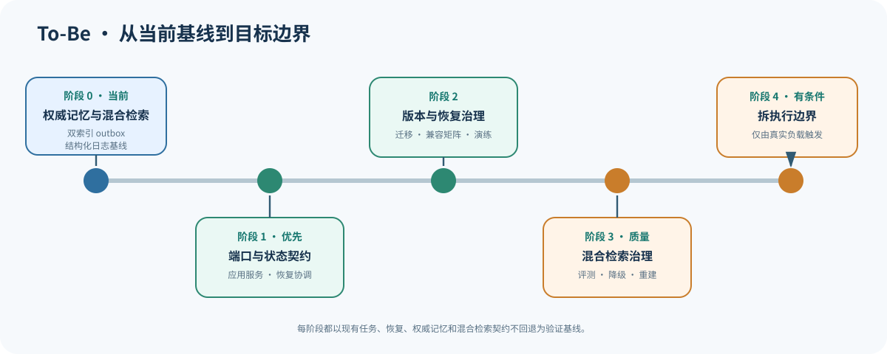
#阶段 1：端口、状态契约与可观测性
改造范围
- 提取
JobApplicationService、RecoveryCoordinator和端口协议； - 分开命名任务投影、调度 outbox 和 checkpoint 契约；
- 为关键节点、状态转换、重试与清理积压增加指标。
收益
- 降低 API/worker 对 Redis 实现细节的直接依赖；
- 改善单元测试和状态机可读性；
- 不改变现有 Redis/MySQL 部署。
风险
- 抽象过度或只移动代码没有收敛职责。
验证
- 现有 API、worker、DDL flow 集成测试全部保持；
- 为端口契约和恢复协调增加确定性测试；
- 对比改造前后状态转换与 Redis 键行为。
#阶段 2：版本、迁移与故障恢复治理
改造范围
- 引入数据库迁移工具；
- 建立 graph/prompt/content/projection 兼容矩阵；
- 明确 checkpoint retention 配置的实际行为；
- 增加 Redis/MySQL/LLM 故障与重启恢复演练。
收益
- 降低长期运行任务和历史记忆在升级时的不确定性；
- 使配置、代码和数据版本形成可执行契约。
风险
- 迁移错误可能影响已有快照或恢复中的任务。
验证
- 从旧版本 fixture 执行升级、恢复和回滚；
- 验证终态 checkpoint 与 outbox 无泄漏；
- 验证 bootstrap 新库与迁移后的库结构一致。
#阶段 3：混合记忆检索质量治理
触发条件
- 已有离线评测集可衡量 BM25、向量和确定性信号的边际价值；
- 生产积压与降级指标能够支持容量和召回质量决策。
改造范围
- 建立混合检索离线评测、阈值和冲突观测；
- 验证 RRF 参数、top-k 和作用域过滤；
- 演练 ES/Qdrant 独立故障、outbox 积压和全量重建。
收益
- 改善相似模式之间的语义复用。
风险
- 错误召回可能污染模型上下文；
- 增加索引一致性、资源和评测成本。
验证
- 离线召回率/准确率和误复用率；
- 索引删除后可从 MySQL 完整重建；
- 召回结果仍通过结构与信任校验。
#阶段 4：按真实负载拆执行边界
触发条件
- API 与工作流执行出现明确的资源或故障隔离问题；
- 单 worker 集群的扩展方式无法满足已测量负载。
改造范围
- 把 workflow runtime 作为独立部署单元；
- 保持应用端口和消息契约稳定；
- 重新评估 checkpoint、任务状态和模型并发配额。
收益
- 独立扩缩和故障隔离。
风险
- 网络、部署、观测和一致性复杂度显著增加。
验证
- 容量、故障注入、重复投递和滚动升级测试；
- API/worker/workflow 契约兼容测试。
#19. 术语与维护约定
#19.1 术语
| 术语 | 本文含义 |
|---|---|
| 公开任务投影 | API 可返回的安全任务状态、问题、结果或错误摘要 |
| 修订 | 任务每次恢复执行时递增的版本；队列消息和用户回答携带该版本，只有与 Redis 当前值一致时才能继续操作 |
| 来源租约 | 对逻辑数据源的可续期互斥控制 |
| dispatch outbox | 已受理但尚待可靠入队的任务集合 |
| cleanup outbox | 已终态但尚待可靠删除 checkpoint 的任务集合 |
| checkpoint | LangGraph 用于恢复节点执行的内部状态 |
| Meta 快照 | 当前被接受的表、列、指标和关系 |
| 权威记忆 | 可追溯、可修正、可重建派生 payload 的长期事实 |
| 结构化输出 | 由模型直接满足 Pydantic schema 的响应契约 |
#19.2 维护约定
以下变化发生时必须同步审阅本文：
- 新增或修改 API、公开状态、Redis 字段或 Lua 转换；
- 修改 LangGraph 节点、路由、状态字段或版本；
- 修改 MySQL 表、事务范围或记忆关系；
- 修改 Elasticsearch、Qdrant、TEI、混合排序或索引同步链路；
- 修改 worker 重试、超时、保留或清理策略；
- 改变 API/worker 部署边界；
- 实施任何 To-Be 演进阶段。
更新文档时应先修改 As-Is 事实，再重新评估风险、决策和 To-Be；不得只修改目标图而保留过期的当前架构描述。